Какая часть тела вас интерисует?

Верхний плечевой пояc
Показать текст
Двуглавая мышца плеча (бицепс) - сгибание плеча (в локтевом суставе)
Трёхглавая мышца плеча (трицепс) - учавствует в разгибании плеча
Дельтовидная мышца плеча - выполняет функцию сгибания и разгибания плеча, а также отведение плеча
Большая грудная мышца - выполняет функцию приведения плеча и вращения его внутрь
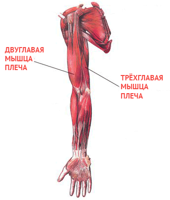
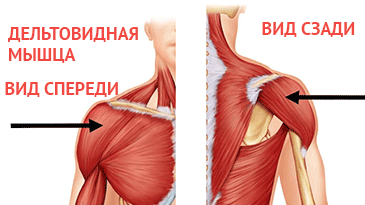
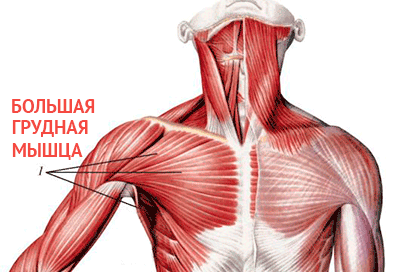
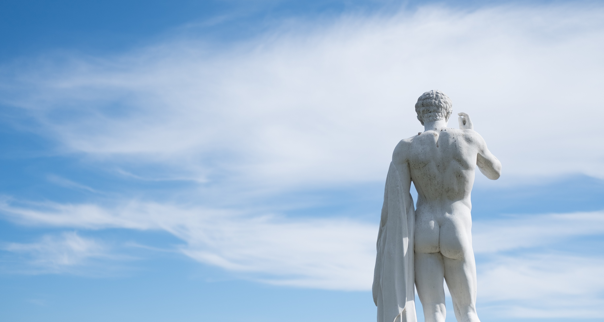
Мышцы нижних конечностей
Показать текст
Двуглавая мышца бедра - выполняет следующие функции: вращение голени наружу, разгибание бедра, сгибание голени в коленном суставе. При укреплённой голени разгибают туловище совместно с большими ягодичными мышцами.
Большая ягодичная мышца - разгибает и поворачивает бедро кнаруже. Выпрямляет и фиксирует туловище.
Четырехглавая мышца бедра - разгибание в коленном суставе.
Икроножные мышцы - работа стопы и стабилизация тела при ходьбе, беге, прыжках.
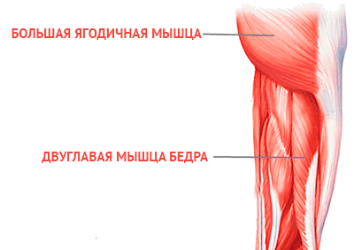
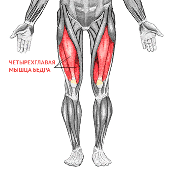
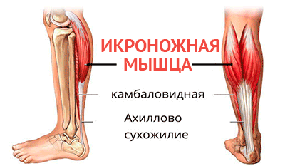
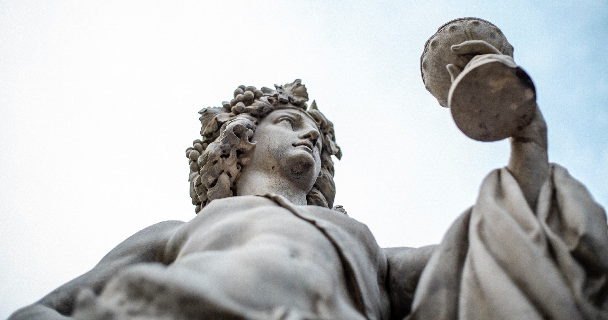
Мышцы живота
Показать текст
Наружняя косая мышца живота, поперечная мышца живота, внутрення косая мышца живота и прямая мышца живота - образуя плотный мышечный каркас выполняют функцию пддержания внуренних органов. Сгибание позвоночного столба и наклон туловища вправо-влево, скручивания.
Наружная косая мышца живота - опускает рёбра, сгибает позвоночник, в положении лёжа на спине мышца поднимает таз, при одностороннем сокращении поворачивает туловище в противоположную сторону.
Поперечная мышца живота - мышца уменьшает объём брюшной полости, оттягивает рёбра вперёд к срединной линии. Поддерживает органы брюшной полости в правильном анатомическом положении, является своего рода корсетом в абдоминальной области. Участвует в стабилизации поясничного отдела и костей таза.
Прямая мышца живота - при фиксированном позвоночнике и тазовом поясе прямая мышца живота опускает рёбра, тянет грудную клетку вниз, сгибает позвоночник, при фиксированной грудной клетке поднимает таз.
Внутренняя косая мышца живота - При одностороннем сокращении поворачивает туловище в свою сторону (вместе с наружной косой мышцей живота противоположной стороны). При двустороннем сокращении мышцы тянут грудную клетку вниз, сгибают позвоночник, при фиксированной грудной клетке поднимают таз.
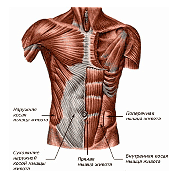
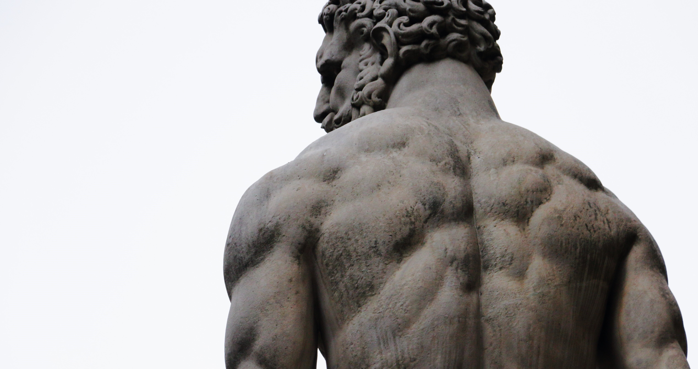
Мышцы спины
Показать текст
Широчайшая мышца спины - функции: приведение плеча к туловищу, пронация. Также расширяет грудную клетку (работает как вспомогательная дыхательным мышцам).
Трапецевидная мышца - функции: поднятие или опускание лопатки, И приближение лопатки к позвоночному столбу.
Разгибатели спины - Мышца, выпрямляющая позвоночник. Самая длинная и мощная мышца спины. Располагается вдоль поясничного отдела позвоночника. Ее делят на 3 части: остистую, длиннейшую и позвоночно - реберную.
Ромбовидная мышца - притягивает лопатку к позвоночнику и кверху.
Нижняя задняя зубчатая мышца - Опускает нижние ребра, участвуя в акте дыхания. Является вспомогательной дыхательной мышцей.
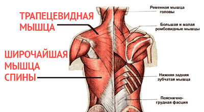
О нас
Кто мы?
Мы - всего лишь люди
Которые пытаются найти свое место во вселенной